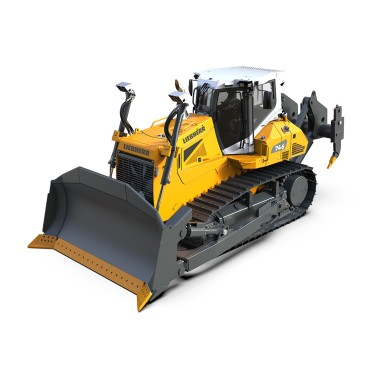

Step into a realm where power meets precision, and engineering marvels transform mammoth tasks into effortless feats. Heavy machinery encompasses an impressive array of robust equipment designed to tackle the most demanding challenges across construction, mining, agriculture, and infrastructure sectors.
These behemoths of industry are not just about brute strength—they’re a harmonious blend of cutting-edge technology and rugged durability. With advanced hydraulic systems, powerful engines, and resilient frames, they’re built to excel in the toughest environments, performing with unmatched efficiency and safety.
In today’s world, these machines are the backbone of progress, making large-scale operations faster, safer, and far more efficient. From lifting colossal loads to executing intricate tasks with pinpoint accuracy, heavy machinery is indispensable in driving the modern world forward.
Heavy machinery is called so because these machines are designed to perform tasks that require significant power and strength, typically involving heavy materials or large-scale operations. The term "heavy" refers to their size, weight, and capacity to handle substantial loads, making them essential in industries like construction, mining, and manufacturing. Examples include excavators, bulldozers, and cranes, all of which are built to withstand tough working conditions and heavy usage.
Heavy machinery is different from standard machinery for several key reasons:
These differences make heavy machinery essential for industries like construction and mining, where they can efficiently handle large-scale tasks.
The development of heavy machinery has a long history, evolving significantly over time. Here are some key milestones:
Overall, heavy machinery has evolved over thousands of years, shaped by technological advancements and the needs of various industries.
Heavy equipment usually comprises five equipment systems:
Designing heavy machinery involves a range of technical, environmental, and safety considerations to ensure the equipment can operate efficiently and safely in demanding conditions. Here you will find some of the key considerations.
(read more)Heavy machinery equipment can be broadly categorized into several key groups, each designed for specific tasks across industries like construction, mining, agriculture, and logistics. Here’s an overview of the main equipment groups: